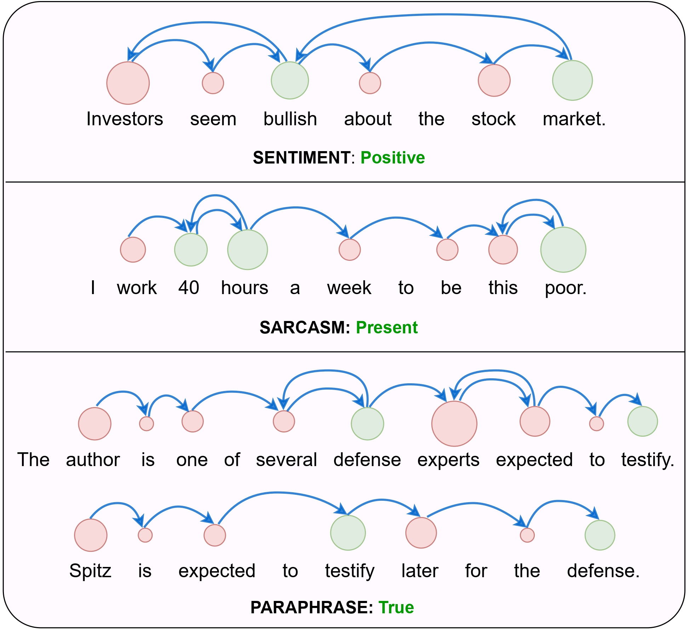
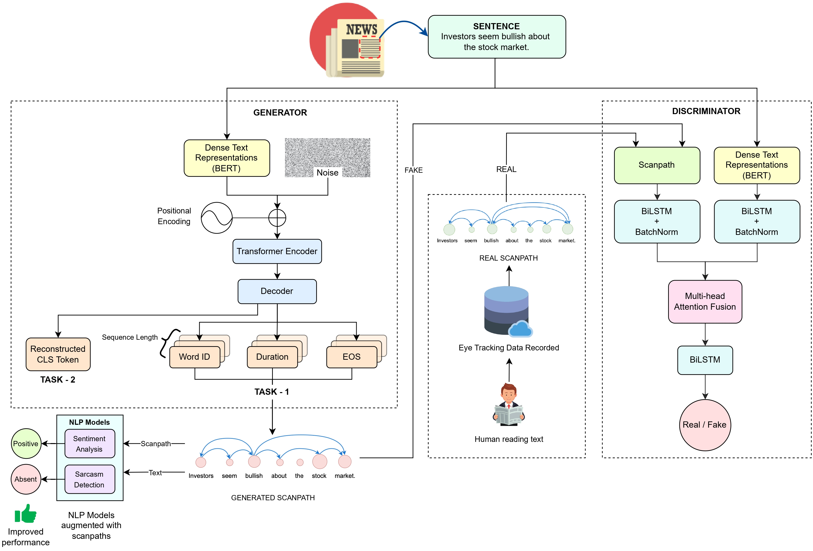

Synthesizing Human Gaze Feedback for Improved NLP Performance
EACL 2023
Get in touch with us at behavior-in-the-wild@googlegroups.com
We introduce ScanTextGAN, the first scanpath generation model over text, integrating a cognitive reading model with a data-driven approach to address the scarcity of human gaze data on text. We demonstrate that ScanTextGAN-generated scanpaths can approximate meaningful cognitive signals in human gaze patterns. Leveraging synthetically generated scanpaths lead to significant performance gains across six NLP datasets.

Abstract
Integrating human feedback in models can improve the performance of natural language processing (NLP) models. Feedback can be either explicit (e.g. ranking used in training language models) or implicit (e.g. using human cognitive signals in the form of eyetracking). Prior eye tracking and NLP research reveal that cognitive processes, such as human scanpaths, gleaned from human gaze patterns aid in the understanding and performance of NLP models. However, the collection of real eyetracking data for NLP tasks is challenging due to the requirement of expensive and precise equipment coupled with privacy invasion issues. To address this challenge, we propose ScanTextGAN, a novel model for generating human scanpaths over text. We show that ScanTextGAN-generated scanpaths can approximate meaningful cognitive signals in human gaze patterns. We include synthetically generated scanpaths in four popular NLP tasks spanning six different datasets as proof of concept and show that the models augmented with generated scanpaths improve the performance of all downstream NLP tasks.
ScanTextGAN Model

Application to NLP Tasks
Intent-Aware Scanpaths: Further finetuning of the ScanTextGAN generation module by back-propagating gradients from the downstream natural language task biases the generator towards words more pertinent to that task. The generator conditioned on the downstream natural language task yields intent-aware scanpaths scanpaths. Augmenting NLP models with these scanpaths leads to higher performance gains.
BibTeX
@inproceedings{khurana2023synthesizing,
title={Synthesizing Human Gaze Feedback for Improved NLP Performance},
author={Khurana, Varun and Kumar, Yaman and Hollenstein, Nora and Kumar, Rajesh and Krishnamurthy, Balaji},
booktitle={Proceedings of the 17th Conference of the European Chapter of the Association for Computational Linguistics},
pages={1895--1908},
year={2023}
}Acknowledgement
We thank Adobe for their generous sponsorship.